MySQL和Navicat for MySQL的安装与配置
一、下载MySQL安装包
下载MySQL-5.1.22
二、安装配置MySQL
1.安装MySQL
(1)双击打开mysql-5.1.22-rc-win32安装文件，出现安装向导界面，单击next继续安装。
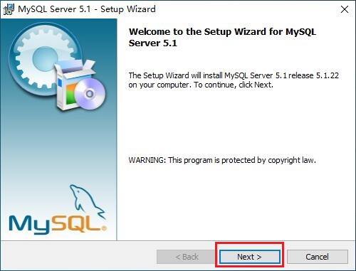(2)出现选择安装类型的窗口，保持默认即可。单击next继续安装。
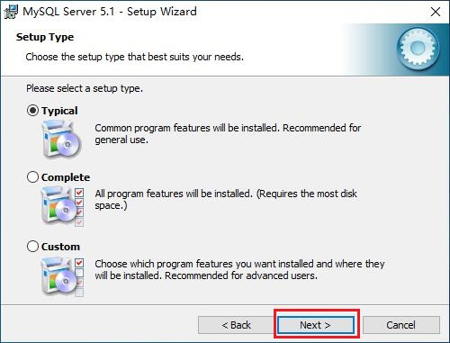(3)进入到准备安装的界面，如前面步骤确认无误，单击Install继续安装。
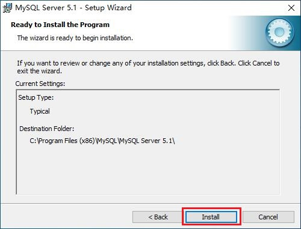(4)单击Install后出现正在安装的界面，稍等片刻即安装完成。
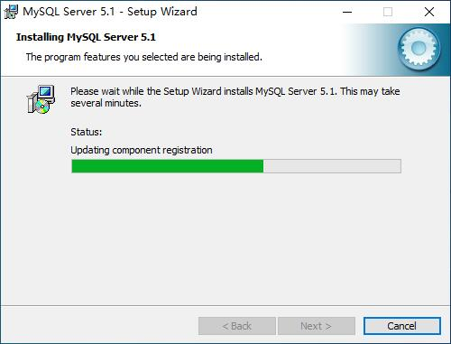(5)安装完成后，出现解说画面，依次单击两次next就行。
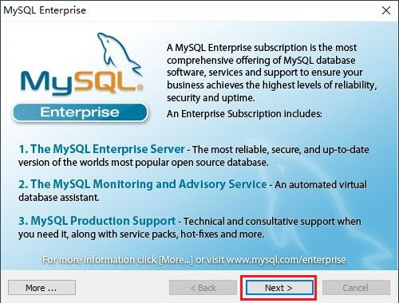 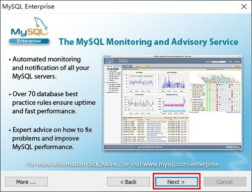(6)至此MySQL安装完毕，已经默认勾选了"立即配置MySQL"，单击finish，进入配置界面。
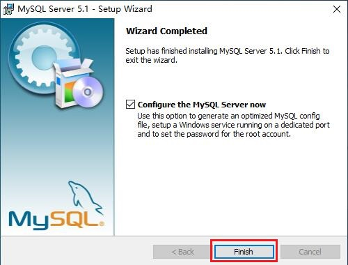2.配置MySQL
(1)出现配置MySQL的窗口，单击next进行配置。
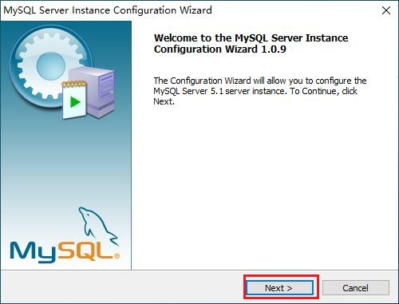(2)在打开的配置类型窗口中选择配置的方式，默认为手动配置，保持不变，单击next继续。
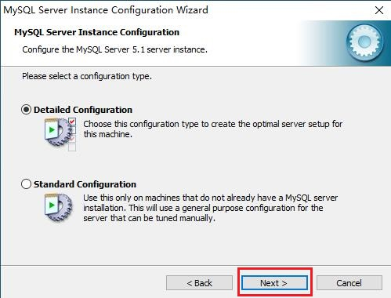(3)在出现的界面中选择服务器的类型，默认为"开发者"，无需更改，单击next继续。
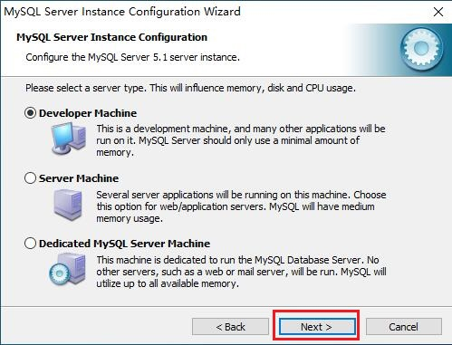(4)在出现的配置界面中选择数据库的用途，默认为"通用型"，保持默认即可，单击next继续。
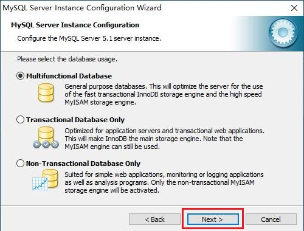(5)在出现的界面中为数据库选择存储空间，这里建议保持默认，防止出现问题，单击next继续。
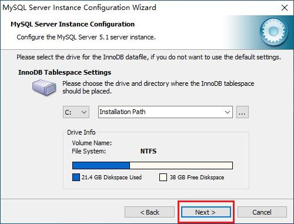(6)在打开的界面中选择MySQL的同时连接数目，默认为"20个左右"，如无特殊需求则保持默认，单击next继续。

(7)在打开的界面中设置端口号等信息，如无特殊需求则保持默认，单击next继续。
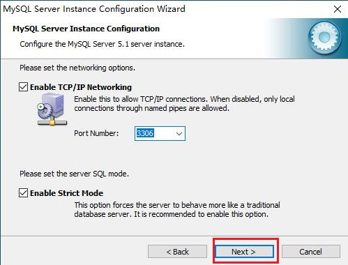(8)在打开的界面中设置字符编码，选择第三项"手动"，并在下拉菜单中选择utf8以支持中文，然后单击next继续。
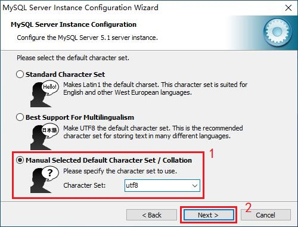(9)在打开的界面中配置MySQL服务，无需改动，单击next继续。
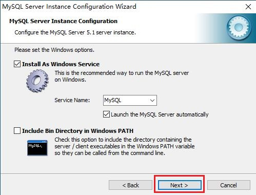(10)在打开的界面中设置root密码，输入两次密码（务必牢记！！！），然后单击next继续。
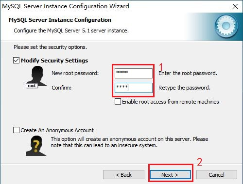(11)到这里所有的配置都已收集完成，界面显示已经准备好配置，单击execute开始配置。
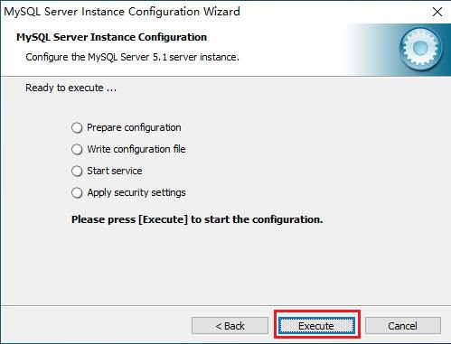(12)稍等片刻，直到界面显示四个对勾，说明已应用完毕，MySQL服务启动成功。单击finish完成配置。
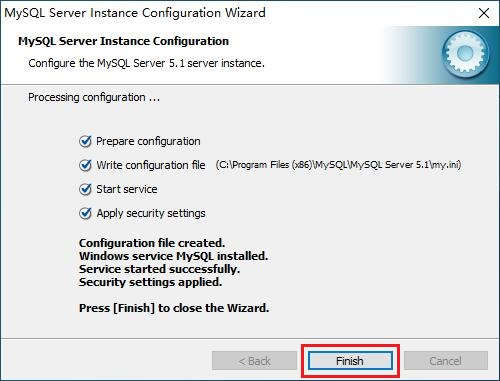三、下载Navicat for MySQL安装包
下载navicat8
四、安装Navicat for MySQL
(1)双击打开安装文件，出现安装向导界面，单击"下一步"继续安装。
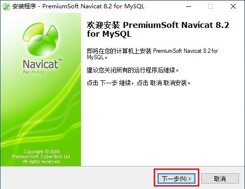(2)阅读条款，选择"我同意"，单击"下一步"继续。
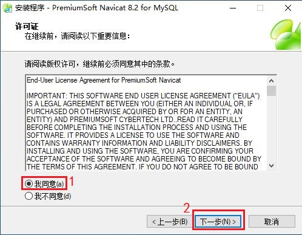(3)选择安装文件夹，建议保持默认，防止出现问题，单击"下一步"继续。
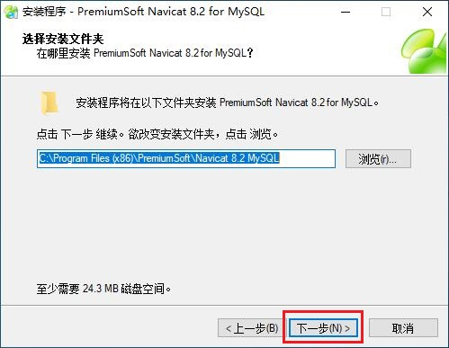(4)选择开始目录，保持默认即可，单击"下一步"继续。
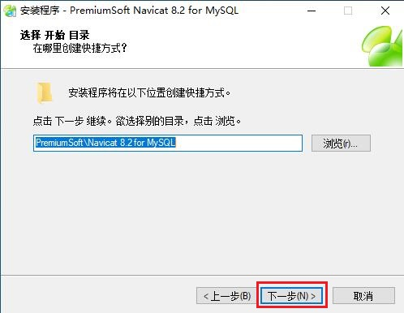(5)选择额外任务，已经默认勾选"创建桌面图标"，直接单击"下一步"继续。
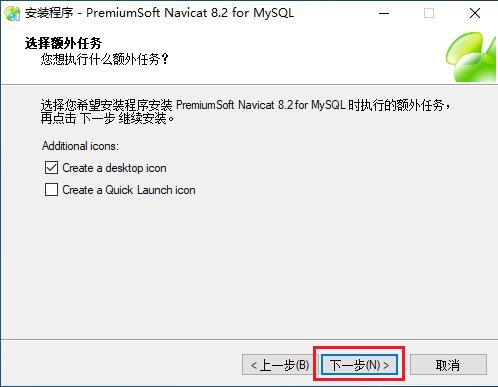(6)已经准备好安装，如确认无误直接单击"安装"。
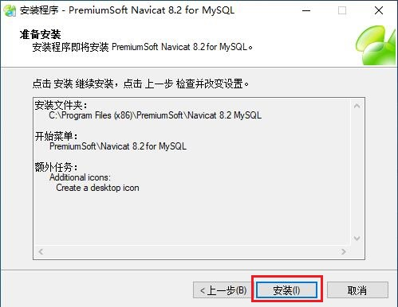(7)单击"安装"后，开始安装Navicat，稍等片刻。
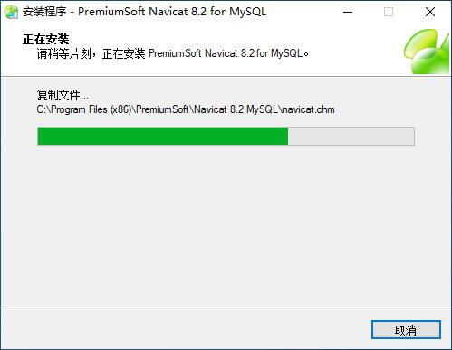(8)至此Navicat安装完毕，单击"完成"退出。
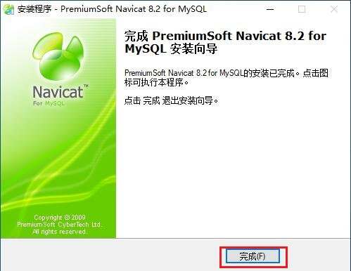五、注册Navicat
(1)安装完毕后，桌面出现Navicat图标，双击打开，首次启动会弹出注册窗口，单击""注册"。
Navicat是收费软件，如不填写注册码，只能试用一个月。
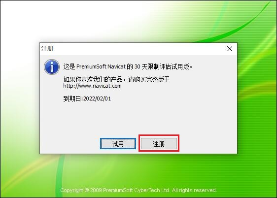(2)输入注册码，名和组织留空即可，出现绿色对勾后，单击确定。
注册码：NAVH-4C5Z-4KUL-2WZE
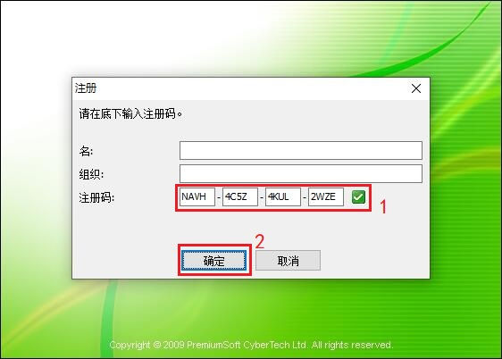